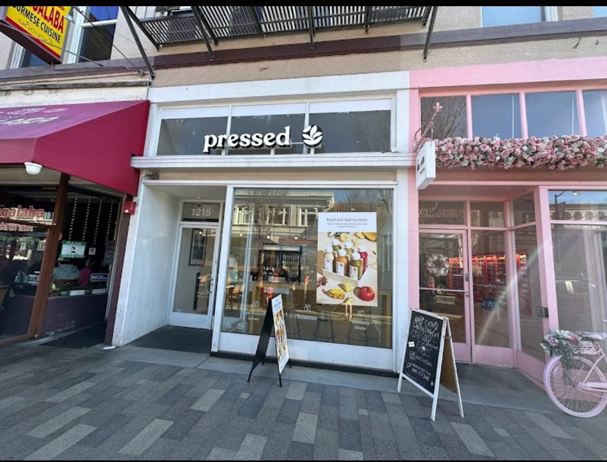
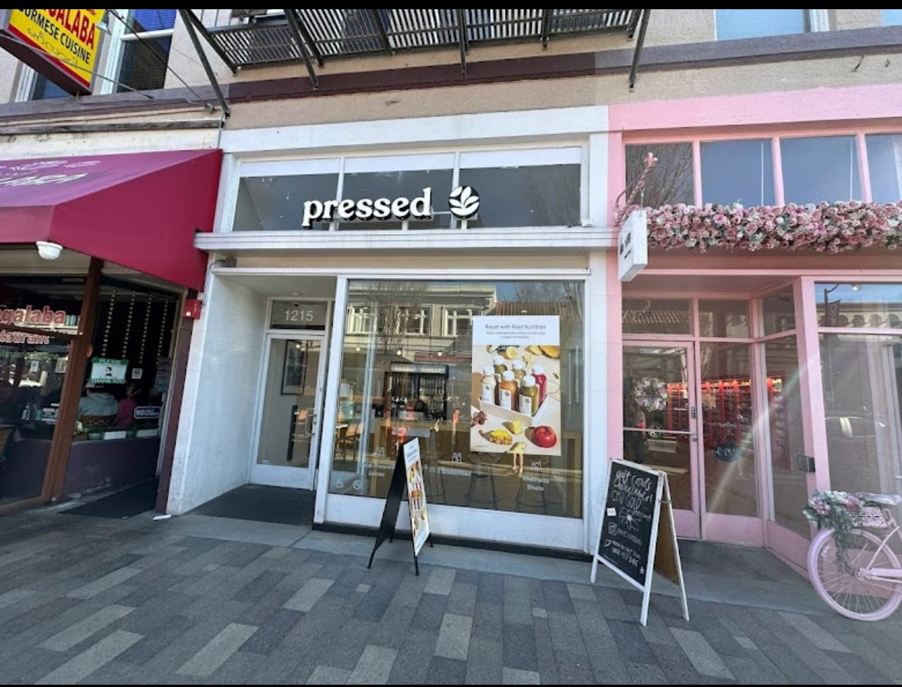
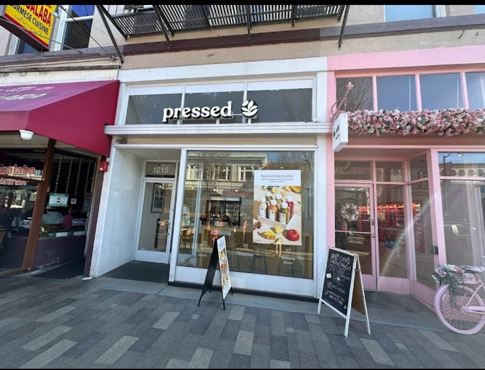

Natalie Callejo
In my professional journey, data entry has been a central theme, and my proficiency with tools like Excel and Word has been crucial to my success. Excel isn't just a spreadsheet program for me; it's a powerful tool that I navigate effortlessly. From organizing extensive datasets to using complex formulas for analysis, my expertise in Excel goes beyond basic data entry. I take pride in not just inputting data accurately but also extracting meaningful insights, turning raw information into actionable intelligence.
When it comes to word processing, Microsoft Word has been my go-to for crafting documents with clarity and professionalism. Whether it's reports, documentation, or other essential written materials, I leverage Word's capabilities to ensure that my communication is not only technically sound but also visually appealing.
One of my standout qualities is my collaborative spirit. Working seamlessly with others is not just a task; it's a reflection of my interpersonal skills. I understand that collaborative environments thrive on effective communication, and my ability to contribute positively to team dynamics creates an atmosphere where collective goals are achieved efficiently.
Problem-solving is a forte that defines my professional approach. Whether it's reconciling discrepancies in datasets or addressing challenges in the data entry process, I bring a blend of analytical thinking and creativity. I've honed the ability to identify issues, propose effective solutions, and implement them with precision, showcasing my capability to navigate complexities inherent in data-oriented roles.
Taking initiative is second nature to me. I don't just wait for things to happen; I recognize opportunities for improvement and proactively implement changes that enhance workflow efficiency. This proactive stance aligns with my forward-thinking approach, not only addressing current challenges but positioning me as an asset for future developments within my professional domain.
In essence, my professional narrative is one of expertise and collaboration. My technical proficiency in Excel and Word, coupled with my ability to work harmoniously with others, showcases a holistic approach to data entry. My problem-solving prowess and proactive initiative further underscore my commitment to not just meeting expectations but exceeding them in the dynamic landscape of data management.
Experience
Data Entry
• Tracked, audited, and organized inventory receipts
• Uploaded art, decor, and furniture inventory onto an inventory control system: Stageforce
• Provided feedback on how to improve data entry migrations
Education
University of California Riverside
Portfolio
 



